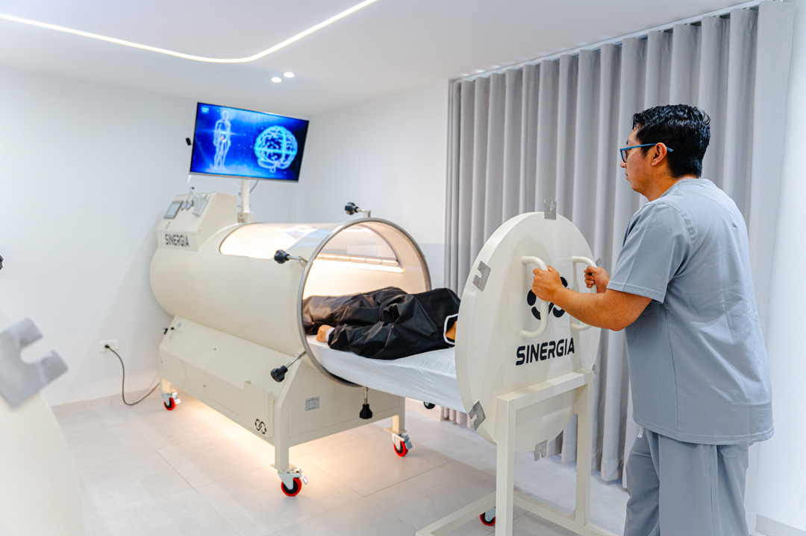

La oxigenoterapia hiperbárica (OHB) consiste en respirar oxígeno en un ambiente presurizado por encima de la presión atmosférica normal. Suena técnico, pero la idea es sencilla: bajo presión, el oxígeno se disuelve directamente en el plasma sanguíneo y alcanza tejidos que, en condiciones normales, reciben poca irrigación.
En una respiración normal, casi todo el oxígeno viaja unido a los glóbulos rojos. Dentro de la cámara, en cambio, el plasma —la parte líquida de la sangre— se satura de oxígeno y lo transporta a músculos, articulaciones y tejidos inflamados o lesionados. Es ahí donde ocurre la magia de la recuperación.
Qué le pasa a tu cuerpo dentro de la cámara
El aumento de oxígeno disponible pone en marcha varios procesos naturales de reparación al mismo tiempo. El organismo dispone de más 'combustible' para regenerar células, controlar la inflamación y combatir la fatiga.
- Acelera la regeneración celular y la reparación de tejidos dañados.
- Reduce la inflamación y el edema tras lesiones, esfuerzos intensos o cirugías.
- Favorece la eliminación de la fatiga y del ácido láctico acumulado.
- Estimula la formación de nuevos vasos sanguíneos y mejora la oxigenación general.

No es dopaje ni un atajo: es darle a tu cuerpo más de lo que ya usa para curarse —oxígeno.
¿Cómo es una sesión?
Una sesión típica dura entre 60 y 90 minutos en un ambiente cómodo, seguro y monitorizado. Te recuestas dentro de la cámara y simplemente respiras con normalidad mientras la presión hace el trabajo. Muchas personas aprovechan para descansar, escuchar música o incluso dormir.
Los protocolos se personalizan según tu objetivo: recuperación de una lesión deportiva, apoyo tras una cirugía, manejo de la fatiga o, simplemente, optimización del bienestar y la energía dentro de un plan de biohacking.
¿Para quién es?
Deportistas que quieren recuperarse más rápido entre entrenamientos, personas en rehabilitación de lesiones y quienes buscan más energía y vitalidad son los principales beneficiados. En SINERGIA MED, la cámara hiperbárica siempre parte de una valoración médica previa que define si es adecuada para ti y con qué frecuencia.
En resumen
- La cámara hiperbárica satura tu plasma de oxígeno y lo lleva a tejidos poco irrigados.
- Acelera la regeneración, baja la inflamación y reduce la fatiga.
- Sesiones de 60–90 minutos, no invasivas y bajo supervisión médica.
- Ideal para recuperación deportiva, post-lesión y optimización del bienestar.
Este artículo tiene fines informativos y no sustituye una valoración médica. En SINERGIA MED cada protocolo se define de forma individual tras una consulta.
¿Quieres saber si esto es para ti?
Agenda una valoración en SINERGIA MED, el primer Medical Biohacking Center del Ecuador, en Ambato.
Agenda tu cita